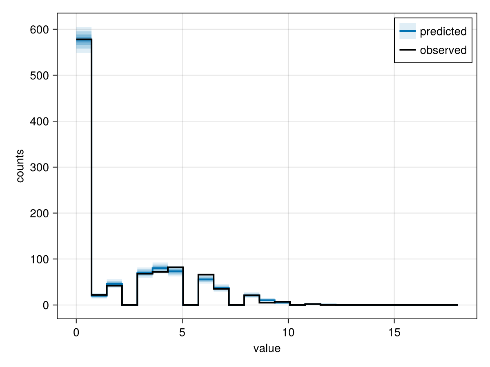

Custom distributions
Even though WrenDists already provides many commonly used distributions (read more here), we may sometimes still find ourselves working with distributions that we need to define from scratch.
In this example, we'll demonstrate how to write a zero-inflated Poisson distribution that allows us to not only run inference but also to benefit from other important workflow features Wren provides, such as sampling from the prior.
Details on zero-inflation
To orient ourselves to the task at hand, we will first define the zero-inflated Poisson distribution. This distribution models count data with more zeros than a Poisson distribution would predict. It assumes that each observation comes from one of two processes: with probability $π$, the observation is always zero; otherwise, it is drawn from a Poisson distribution with mean $λ$. Because the Poisson process can also produce zeros, an observed zero could come from either process.
More formally, we can write this distribution as:
\[P(Y = k) = \begin{cases} \pi + (1-\pi)e^{-\lambda}, & k = 0, \\ (1-\pi)\frac{\lambda^k e^{-\lambda}}{k!}, & k \geq 1. \end{cases}\]
How to define a new distribution
We need to define a PoissonZeroInflated struct to store the parameters and methods for DensityInterface.logdensityof (which Wren reexports) and Base.rand:
using Wrenusing Wren.Dists: Poissonusing Random: AbstractRNG, Xoshirousing LogExpFunctions: logaddexpstruct PoissonZeroInflated{T} lambda::T pi::T function PoissonZeroInflated(lambda::T, pi::T) where {T} @assert lambda > zero(T) && zero(T) <= pi <= one(T) return new{T}(lambda, pi) endendfunction Wren.logdensityof(d::PoissonZeroInflated, x::Int) log_1m_pi = log1p(-d.pi) return if x == 0 log_pi = log(d.pi) log_1m_pi_pois0 = log_1m_pi - d.lambda logaddexp(log_pi, log_1m_pi_pois0) else log_1m_pi + logdensityof(Poisson(d.lambda), x) endendfunction Base.rand(rng::AbstractRNG, d::PoissonZeroInflated) return rand(rng) < d.pi ? 0 : Int(rand(rng, Poisson(d.lambda)))endIf you are used to working with custom distributions in Turing.jl, you may notice that we are not subtyping Distributions.jl's types or implementing its full interface — all Wren needs to know is how to calculate the log-density and how to draw a sample.
Usage inside a model
First we simulate zero-inflated counts that depend on some binary covariate (think for example the location where counts were recorded) that we can fit our model to:
lambda = 4.5pi = 0.6dist = PoissonZeroInflated(lambda, pi)n = 1000rng = Xoshiro(123)y = [rand(rng, dist) for _ in 1:n]Next up is fitting the model.
using Wren.Dists: Gamma, Uniformusing Enzyme@wren function poisson_zeroinflated(y) lambda ~ Gamma(2, 1) pi ~ Uniform(0, 1) for i in eachindex(y) y[i] ~ PoissonZeroInflated(lambda, pi) endendprior_model = poisson_zeroinflated(y)model = prior_model | (; y=y)chain = nuts(model, 1000, 4; progress=false)summarystats(chain)╭─FlexiSummary (9 statistics) ─────────────────────────────────────────────────╮
│ iter collapsed │
│ chain collapsed │
│ ↓ stat = [mean, std, mcse, ess_bulk, ess_tail, rhat, q5, q50, q95] │
│ │
│ Parameters (2) ── VarName │
│ Float64 lambda, pi │
│ │
│ Extras (9) │
│ Float64 step_size, tree_depth, is_divergent, is_max_depth, acceptance_rate │
│ log_density, logprior, loglikelihood, logjoint │
│ │
│ Summary │
│ param mean std mcse … rhat q5 q50 q95 │
│ lambda 4.5805 0.1048 0.0021 1.0014 4.4131 4.5789 4.7524 │
│ pi 0.5729 0.0159 0.0003 1.0007 0.5472 0.5729 0.5985 │
╰──────────────────────────────────────────────────────────────────────────────╯We successfully sampled from our custom zero-inflated Poisson distribution and were able to recover the true parameters reasonably well.
Manual loglikelihoods
We strongly discourage the use of @addloglikelihood. It should only be considered if the model would otherwise not work (if you run into such a case, please do let us know in an issue).
Instead of using the recommended ~ syntax, it is possible to use the @addloglikelihood macro to increment the loglikelihood manually.
Using @addloglikelihood means that you will not be able to use Wren's features relating to Bayesian workflow.
For example, you will only be able to sample from the prior via rand if you use the ~ syntax:
rand(prior_model)VarNamedTuple
├─ lambda => 0.7300449786306392
├─ pi => 0.40228790209793286
└─ y => PartialArray size=(1000,) data::Vector{Int64}
├─ (1,) => 0
├─ (2,) => 0
│ ⋮ (997 more set indices)
└─ (1000,) => 0Generating posterior predictions via predict and visualising them with FlexiChains.jl also requires the ~ syntax:
using FlexiChainsusing CairoMakiepp_chain = predict(prior_model, chain)FlexiChains.Makie.pushforward_hist(pp_chain, @vn(y); observed=y)